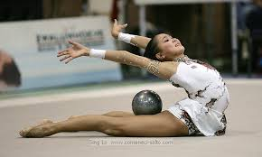

Stretching
![]()
Flexibility is important to any dancer to increase their range of motion, reduce muscle tension, and decrease the risk of activity-based injuries. Stretching after training helps reduce muscle soreness and can result in better training.
Before stretching make sure you are wearing appropriate clothing that allow you to easily move. Dancewear is a good choice butjeans or corduroys are not. It is important that your muscles are warmed up to prevent injury. Jog for five minutes of fast walk for 10. Remeber to stay hydrated throughout the warmup at stretching. You can do this by bringing a bottle of water with you.
Splits:
Right and Left-->To stretch for right or left splits, start off in a lung position and slowly rock back and forth into child's pose. Then, return to the origional lung position but this time, pull your back leg towards you with you hand. Alternate betweeen lung to child's pose and lung to leg extension. After about a few mintues, extend your front leg from a lung and slowly slide down onto the floor. Do not make any sudden movements and stop once you feel your muscles tensing. Rock up and down, pushing your hips towards the ground. If you are to fully sit on the ground try to touch your head to your front leg for extra stretching. Make sure your hips remain facing forward. To help you body stay facing forward you can place one hand on the front and one hand on the back leg. This will help you twist your hips forward and can also serve as an extra stretch. After 5-10 minutes of split strething on one leg, switch to the other for another 5-10 minutes. After stretching, kick both your legs in front arabesque to help relieve your muscles after stretching.
Middle-->To start stretching for middle splits sit in a butterfly position (with both feet pointing inward towards you.) Slowly slide your hands away from you. Try to touch your forehead to your feet. Once you reach your maximum stretch bounce forward and back while slowly pushing your hands farther forward. After 5 minutes of butterfly stretching open your feet into a middle split. Sit forward facing a wall with your feet agains tthe wall. Slowly push closer and closer to the wall to increase your split. After 5 minutes of this stretching, move away from the wall. Sit on the floor in middle splits and push your hands forward as far as you can. Like in the butterfly position, rock back and forth and slowly push your hand farther back. After 5 minutes lean towards your right side and try to touch your forehead to your leg. Rock back and forth and push harder down. Aftr 5 minutes, repeat the same excersize on your left size. To relieve muscle soreness after stretching, stay in a side squat position and move your torso from side to side.
Back:
In this section you will learn some easy traditional rythmic gymnastics stretching.
Excersize 1: Cobra

Start off by doing the traditional cobra stretch by laying stomach-down on the ground and use your hands to push your back backwards. Arch your back and tilt your head back until you can't push your back any further. For an additional stretch, raise your hands off the ground and use your back muscles to support yourself in an arched position. Repeat this move 10-15 times and hold the arch for 20-30 seconds.
Excersize 2: Bridge

Start off with the traditional bridge either from the ground or from a standing position. Once in a bridge position, try to straighten out your feet and arch your back as much as possible. Repeat this excersize 20 times, holding in the straightened position for 20-30 seconds. For an additional stretch, try to bring your glut as close as possible to your head, as shown in the picture. Repeat this excerize 20 times holding the position for 20 seconds at a time. Another back excersize involving bridges is the wall walk. Stand facing back to a wall (preferably with bars). Lean back and walk your hands down the wall until you reach a bridge position. Stretch in the bridge position then walk your hands back up the wall into a standing position.
Excersize 3: Chest Candle

Start this move by sitting on your knees raised up. Then, slowly arch your back and roll from your knees onto your chest. Keep your hands at your side and turn your head to the side when coming in contact with teh floor. Use your back muscles to hold your body in the air as long as possible. Once you are ready to come back down, tighten your back and leg muscles and kick back onto your knees. At first, it may be hard to keep your feet in the air. After some practice, it will become much easier. Repeat this excersize 10-15 times, staying up as long as possible. For an extra strertch bend your knees down towards your head when you are in the chest candle position. Bounce your feet back and forth as you try to touch your feet to the ground.